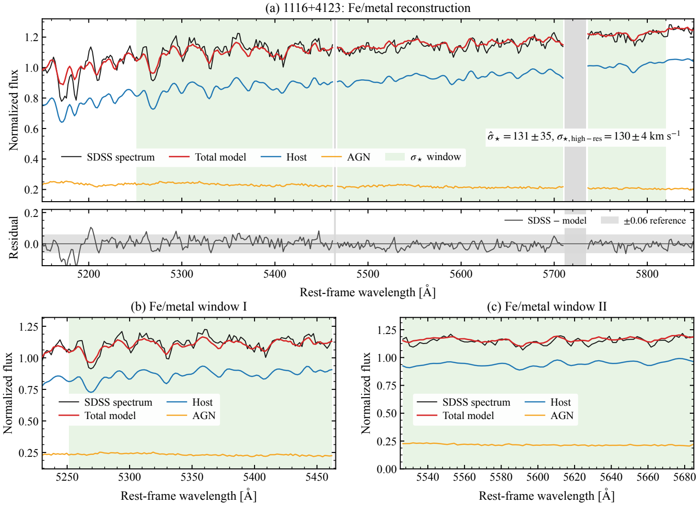
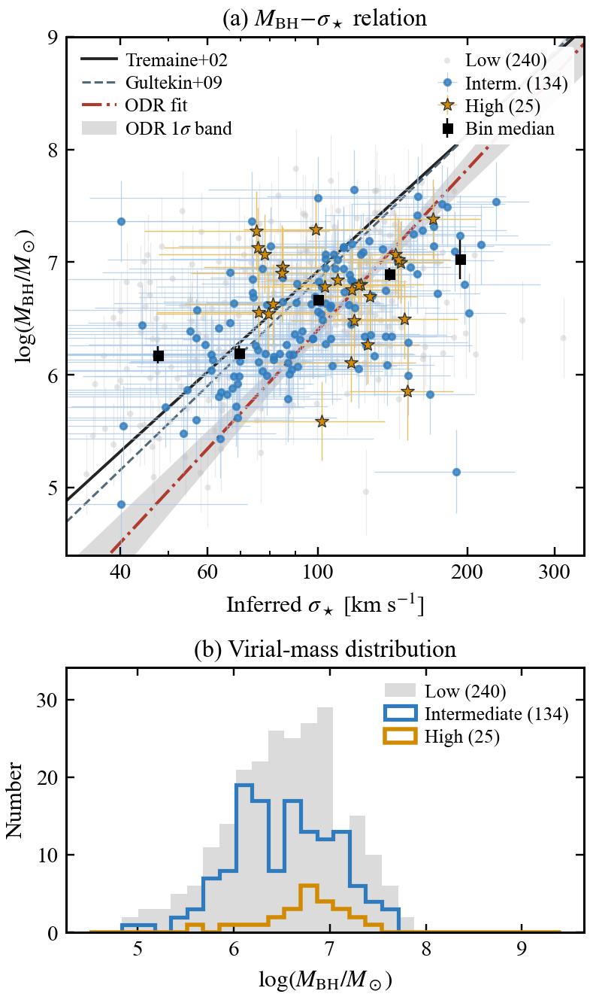

Research
How do supermassive black holes grow with their galaxies? I approach this question by separating the light we observe, calibrating the physical scales, and testing the connection across different populations and cosmic epochs.
Download research summary ↓Quasar host galaxies with DESI & HSC
First-author work · ApJ, 1004, 13 (2026)
A bright AGN can overwhelm the stellar light needed to understand its host. I developed an iterative spectrophotometric decomposition that combines DESI spectra with Subaru/HSC images for 1,083 extended type-1 quasars at 0.1 < z < 1.
PSF-subtracted imaging constrains the host flux within the spectroscopic aperture; spectral fitting constrains the stellar population and nuclear emission. Together, these measurements reduce the degeneracy between the two components and recover host star formation, stellar mass, and black-hole–stellar-mass relations.
Main result. These extended-quasar hosts are predominantly quiescent, and about 23% show post-starburst signatures. Active black-hole growth can coexist with weak current star formation. The morphology selection favours prominent hosts, so the result describes this selected population.
Changing-look AGNs as a physical laboratory
First-author preprint · Submitted to ApJ
Changing-look AGNs change their continuum and broad lines over years, while their host stellar populations remain effectively stable. I extended the decomposition to paired DESI and SDSS spectra of 105 changing-look AGNs, using HSC photometry to account for the different fibre apertures.
The model shares a stellar population across epochs while allowing nuclear emission to vary. A faint epoch can reveal the host; a bright epoch constrains the AGN. Their consistency provides a direct check on component separation.
Main result. Among 82 extended changing-look AGNs and a comparison sample matched in redshift and stellar mass, post-starburst fractions are 35.4% and 18.3%. The quiescent fractions do not differ clearly. Together with the rapid nuclear transitions, this favours changes in central accretion as the main driver.
Near-infrared black-hole mass tracers
First-author preprint · Submitted to A&A
When optical broad lines are attenuated or unavailable, near-infrared Paschen lines offer complementary access to black-hole masses. I reduced and analysed LBT/LUCI spectra of 27 SDSS reverberation-mapping quasars, combining them with archival Paschen measurements of AGNs with reverberation masses.
We anchor single-epoch Paα and Paβ estimators directly to reverberation mapping, and test the dependence on line profiles, luminosity definitions, and virial exponents.
Main result. The fiducial intrinsic scatters are 0.28 dex for Paα and 0.32 dex for Paβ within the calibration sample. The absolute mass scale remains subject to the reverberation-mapping virial factor.
Stellar kinematics with forward-modeled spectra
First-author manuscript · In preparation
Host absorption features are diluted by AGN continuum and emission lines. I developed a neural network trained on 220,000 forward-modeled spectra to estimate stellar velocity dispersion, reconstruct the stellar and nuclear components, and report calibrated uncertainties.
Independent mock tests and comparisons with SDSS and higher-resolution Keck spectra identify useful regimes and measurement biases. Confidence criteria assess host information and reconstruction quality, including limits set by spectral resolution.


Main result. Of 399 nearby broad-line AGNs, 159 pass the adopted confidence criteria. Their fitted MBH–σ★ slope is 4.74 ± 0.55 under the adopted uncertainties. The normalization depends on the virial mass scale and the selected host population.


AGN populations at cosmic dawn
Collaborative work · Nature Astronomy (2025) · 3rd author
I contributed to a JWST/NIRCam study of AGNs at 7.15 ≤ z ≤ 7.75. Decomposing rest-frame ultraviolet images into unresolved and extended components connects the same component-separation problem to the origin of the ionizing photons that reionized the Universe.
Main result. Even assigning all unresolved light to AGNs gives an upper bound of about one third of the ionizing photons required at z ≈ 7.5. This conservative bound rules out AGNs as the dominant source in the studied population.
Future research interests
I am interested in spatially resolved near-infrared spectroscopy of quasar hosts and environments, connecting JWST observations to wide-area Euclid imaging and LBT follow-up. This would extend host-aware measurements to companion galaxies, extended gas, and the earliest stages of black-hole growth.